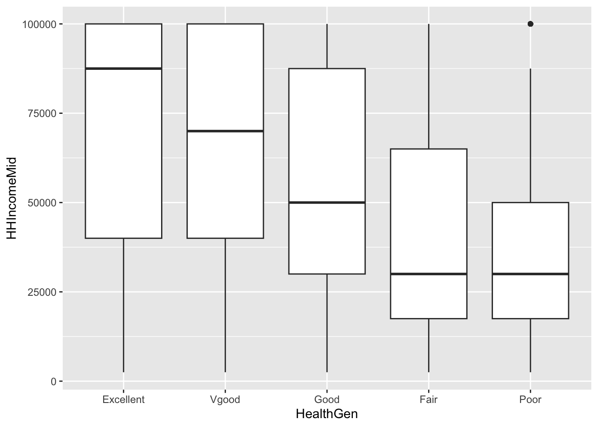
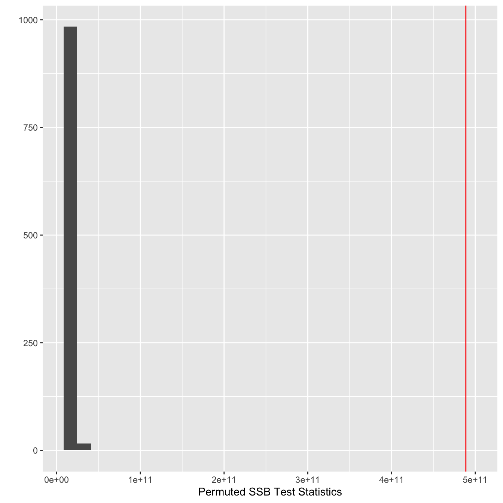
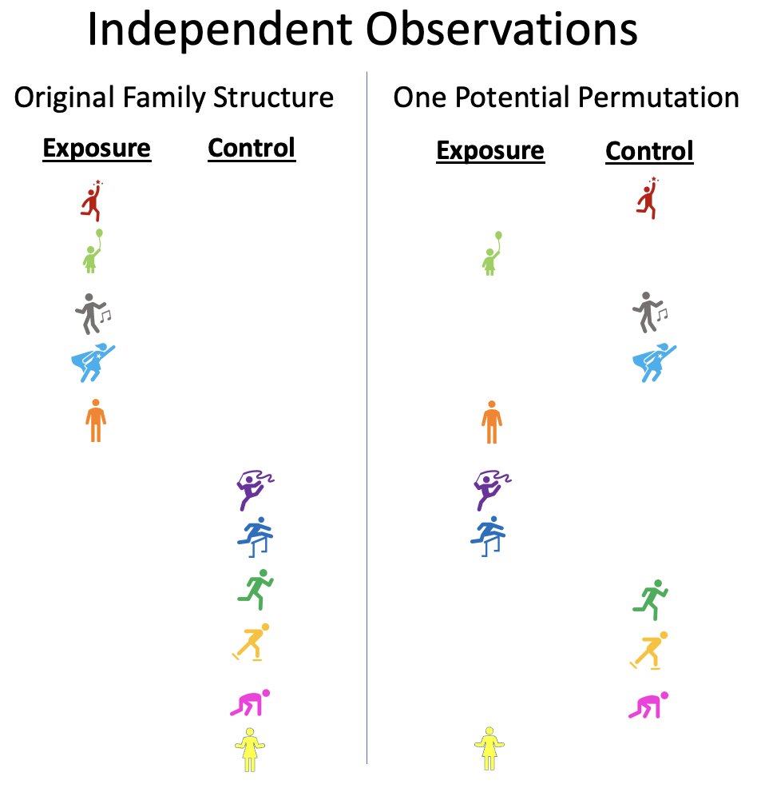
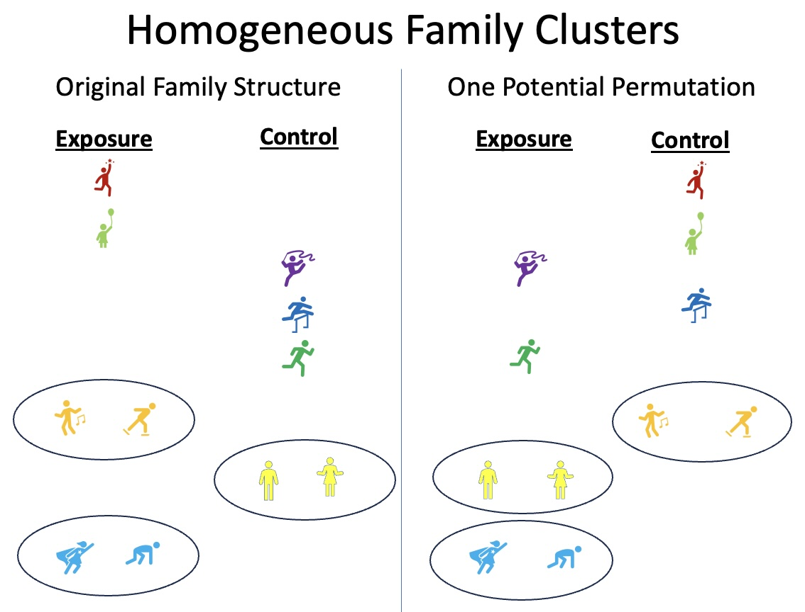
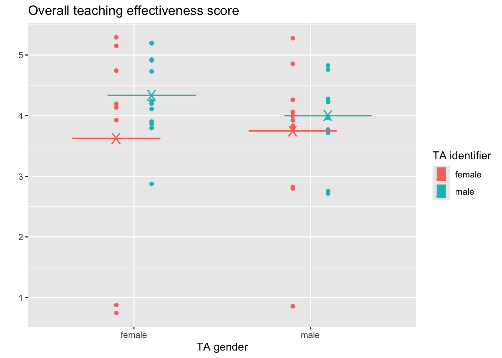
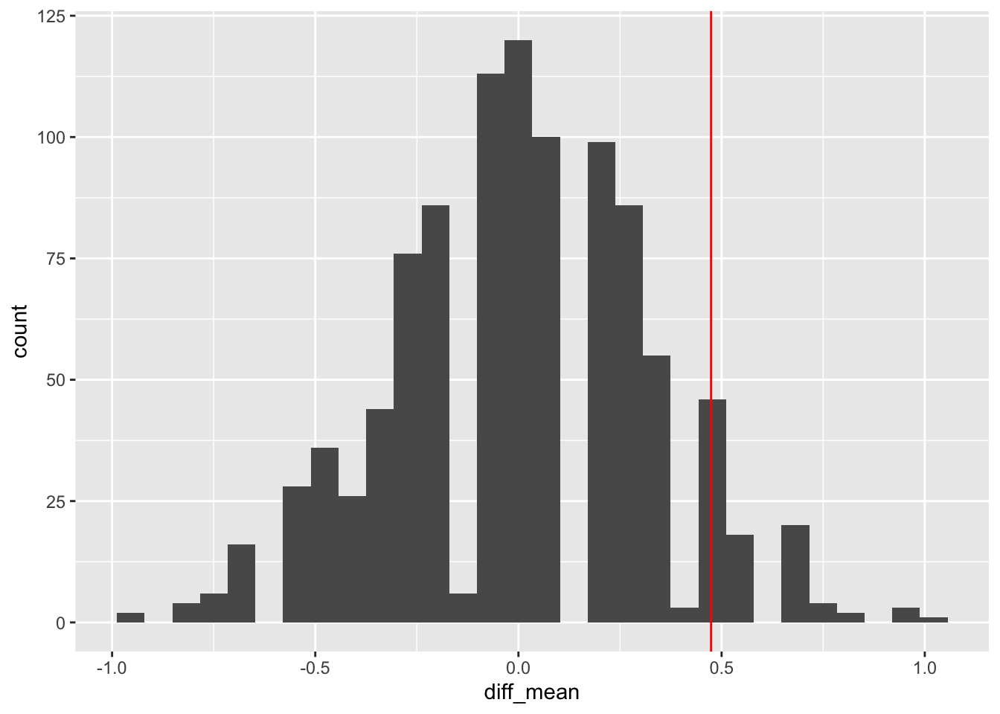

Permutation Tests
September 30 + October 2, 2024
Agenda 9/30/24
- Review: logic of hypothesis testing
- Logic of permutation tests
- Examples - 2 samples and beyond
Statistics Without the Agonizing Pain
Logic of hypothesis tests
Choose a statistic that measures the effect
Construct the sampling distribution under \(H_0\)
Locate the observed statistic in the null sampling distribution
p-value is the probability of the observed data or more extreme if the null hypothesis is true
Logic of permutation tests
Choose a test statistic
Shuffle the data (force the null hypothesis to be true)
Create a null sampling distribution of the test statistic (under \(H_0\))
Find the observed test statistic on the null sampling distribution and compute the p-value (observed data or more extreme). The p-value can be one or two-sided.
Consider the NHANES dataset.
- Income
- (HHIncomeMid - Numerical version of HHIncome derived from the middle income in each category)
- Health
- (HealthGen - Self-reported rating of participant’s health in general Reported for participants aged 12 years or older. One of Excellent, Vgood, Good, Fair, or Poor.)
Summary of the variables of interest
NHANES |> select(HealthGen) |> table()HealthGen
Excellent Vgood Good Fair Poor
878 2508 2956 1010 187 NHANES |> select(HHIncomeMid) |> summary() HHIncomeMid
Min. : 2500
1st Qu.: 30000
Median : 50000
Mean : 57206
3rd Qu.: 87500
Max. :100000
NA's :811 Mean Income broken down by Health
NH.means <- NHANES |>
filter(!is.na(HealthGen) & !is.na(HHIncomeMid)) |>
group_by(HealthGen) |>
summarize(IncMean = mean(HHIncomeMid), count=n())
NH.means# A tibble: 5 × 3
HealthGen IncMean count
<fct> <dbl> <int>
1 Excellent 69354. 817
2 Vgood 65011. 2342
3 Good 55662. 2744
4 Fair 44194. 899
5 Poor 37027. 164Are the differences in means simply due to random chance??
Income and Health
NHANES |> filter(!is.na(HealthGen)& !is.na(HHIncomeMid)) |>
ggplot(aes(x=HealthGen, y=HHIncomeMid)) + geom_boxplot()
Differences in Income ($)
Excellent Vgood Good Fair Poor
Excellent 0.000 4343.671 13691.99 25160.797 32326.906
Vgood -4343.671 0.000 9348.32 20817.126 27983.236
Good -13691.991 -9348.320 0.00 11468.806 18634.915
Fair -25160.797 -20817.126 -11468.81 0.000 7166.109
Poor -32326.906 -27983.236 -18634.92 -7166.109 0.000Overall difference
We can measure the overall differences as the amount of variability between each of the means and the overall mean:
\[F = \frac{\text{between-group variability}}{\text{within-group variability}}\] \[F = \frac{\sum_i n_i(\overline{X}_{i\cdot} - \overline{X})^2/(K-1)}{\sum_{ij} (X_{ij}-\overline{X}_{i\cdot})^2/(N-K)}\] \[SumSqBtwn = \sum_i n_i(\overline{X}_{i\cdot} - \overline{X})^2\]
Creating a test statistic
NHANES |> select(HHIncomeMid, HealthGen) |>
filter(!is.na(HealthGen)& !is.na(HHIncomeMid))# A tibble: 6,966 × 2
HHIncomeMid HealthGen
<int> <fct>
1 30000 Good
2 30000 Good
3 30000 Good
4 40000 Good
5 87500 Vgood
6 87500 Vgood
7 87500 Vgood
8 30000 Vgood
9 100000 Vgood
10 70000 Fair
# ℹ 6,956 more rowsCreating a test statistic
GM <- NHANES |> summarize(mean(HHIncomeMid, na.rm=TRUE)) |> pull()
GM[1] 57206.17NH.means# A tibble: 5 × 3
HealthGen IncMean count
<fct> <dbl> <int>
1 Excellent 69354. 817
2 Vgood 65011. 2342
3 Good 55662. 2744
4 Fair 44194. 899
5 Poor 37027. 164Creating a test statistic
NH.means |> select(IncMean) |> pull() - GM[1] 12148.175 7804.504 -1543.816 -13012.622 -20178.731(NH.means |> select(IncMean) |> pull() - GM)^2[1] 147578150 60910286 2383368 169328332 407181201NH.means |> select(count) |> pull()[1] 817 2342 2744 899 164NH.means |> select(count) |> pull() *
(NH.means |> select(IncMean) |> pull() - GM)^2[1] 120571348234 142651889943 6539963000 152226170649 66777716928Creating a test statistic
\[SumSqBtwn = \sum_i n_i(\overline{X}_{i\cdot} - \overline{X})^2\]
sum(NH.means |> select(count) |> pull() *
(NH.means |> select(IncMean) |> pull() - GM)^2)[1] 488767088754Permuting the data
NHANES |>
filter(!is.na(HealthGen)& !is.na(HHIncomeMid)) |>
mutate(IncomePerm = sample(HHIncomeMid, replace=FALSE)) |>
select(HealthGen, HHIncomeMid, IncomePerm) # A tibble: 6,966 × 3
HealthGen HHIncomeMid IncomePerm
<fct> <int> <int>
1 Good 30000 100000
2 Good 30000 100000
3 Good 30000 40000
4 Good 40000 30000
5 Vgood 87500 40000
6 Vgood 87500 12500
7 Vgood 87500 70000
8 Vgood 30000 100000
9 Vgood 100000 87500
10 Fair 70000 100000
# ℹ 6,956 more rowsPermuting the data & a new test statistic
NHANES |>
filter(!is.na(HealthGen)& !is.na(HHIncomeMid)) |>
mutate(IncomePerm = sample(HHIncomeMid, replace=FALSE)) |>
group_by(HealthGen) |>
summarize(IncMeanP = mean(IncomePerm), count=n()) |>
summarize(teststat = sum(count*(IncMeanP - GM)^2))# A tibble: 1 × 1
teststat
<dbl>
1 15397250007.Lots of times…
reps <- 1000
SSB_perm_func <- function(.x){
NHANES |>
filter(!is.na(HealthGen)& !is.na(HHIncomeMid)) |>
mutate(IncomePerm = sample(HHIncomeMid, replace=FALSE)) |>
group_by(HealthGen) |>
summarize(IncMeanP = mean(IncomePerm), count=n()) |>
summarize(teststat = sum(count*(IncMeanP - GM)^2))
}
SSB_perm_val <- map(1:reps, SSB_perm_func) |>
list_rbind()
SSB_perm_val# A tibble: 1,000 × 1
teststat
<dbl>
1 13765108404.
2 13674693002.
3 14993720191.
4 15999631524.
5 19505133840.
6 11888626574.
7 13903654157.
8 12432195571.
9 17200501281.
10 13326819094.
# ℹ 990 more rowsCompared to the real data
SSB_obs <- NHANES |>
filter(!is.na(HealthGen) & !is.na(HHIncomeMid)) |>
group_by(HealthGen) |>
summarize(IncMean = mean(HHIncomeMid), count=n()) |>
summarize(obs_teststat = sum(count*(IncMean - GM)^2))
SSB_obs # A tibble: 1 × 1
obs_teststat
<dbl>
1 488767088754.sum(SSB_perm_val |> pull() > SSB_obs |> pull() ) / reps[1] 0Compared to the observed test statistic

Agenda 10/2/24
- Conditions, exchangeability, random structure
- Different structures and statistics
Exchangeability
If the null hypothesis is true, the labels assigning groups are interchangeable with respect to the probability distribution.
typically (with the two group setting),
\[H_0: F_1(x) = F_2(x)\]
(there are no distributional or parametric conditions)
Exchangeability
More generally, we might use the following exchangeability definition
Data are exchangeable under the null hypothesis if the joint distribution from which the data came is the same before permutation as after permutation when the null hypothesis is true.
Probability as measured by what?
Random Sample The concept of a p-value usually comes from the idea of taking a sample from a population and comparing it to a sampling distribution (from many many random samples).
Randomized Experiment The p-value represents the observed data compared to the treatment variable being allocated to the groups “by chance.”
Permuting independent observations
Consider a “family” structure where some individuals are exposed and others are not (control).

Permuting homogenous cluster
Consider a “family” structure where individuals in a cluster always have the same treatment.

Permuting herterogenous cluster
Consider a “family” structure where individuals in a cluster always have the opposite treatment.

Gender bias in teaching evaluations
The Economist, Sep 21, 2017


Gender bias in teaching evaluations

Gender bias in teaching evaluations

Innovative Higher Education, 40, pages 291–303 (2015).
Gender bias in teaching evaluations

Gender bias: MacNell data

Analysis goal
Want to know if the population average score for the perceived gender is different.
\[H_0: \mu_{ID.Female} = \mu_{ID.Male}\]
Although for the permutation test, under the null hypothesis not only are the means of the population distributions the same, but the variance and all other aspects of the distributions across perceived gender.
MacNell Data without permutation
macnell |>
select(overall, tagender, taidgender) # A tibble: 47 × 3
overall tagender taidgender
<dbl> <dbl> <dbl>
1 4 0 1
2 4 0 1
3 5 0 1
4 5 0 1
5 5 0 1
6 4 0 1
7 4 0 1
8 5 0 1
9 4 0 1
10 3 0 1
# ℹ 37 more rowsPermuting MacNell data
Conceptually, there are two levels of randomization:
\(N_m\) students are randomly assigned to the male instructor and \(N_f\) are assigned to the female instructor.
Of the \(N_j\) assigned to instructor \(j\), \(N_{jm}\) are told that the instructor is male, and \(N_{jf}\) are told that the instructor is female for \(j=m,f\).
macnell |>
group_by(tagender, taidgender) |>
summarize(n())# A tibble: 4 × 3
# Groups: tagender [2]
tagender taidgender `n()`
<dbl> <dbl> <int>
1 0 0 11
2 0 1 12
3 1 0 13
4 1 1 11Stratified two-sample test:
- For each instructor, permute perceived gender assignments.
- Use difference in mean ratings for female-identified vs male-identified instructors.
MacNell Data with permutation
macnell |>
group_by(tagender) |>
mutate(permTAID = sample(taidgender, replace=FALSE)) |>
select(overall, tagender, taidgender, permTAID) # A tibble: 47 × 4
# Groups: tagender [2]
overall tagender taidgender permTAID
<dbl> <dbl> <dbl> <dbl>
1 4 0 1 0
2 4 0 1 1
3 5 0 1 1
4 5 0 1 0
5 5 0 1 0
6 4 0 1 1
7 4 0 1 0
8 5 0 1 0
9 4 0 1 1
10 3 0 1 1
# ℹ 37 more rowsMacNell Data with permutation
MacNell Data with permutation
diff_means_func <- function(.x){
macnell |> group_by(tagender) |>
mutate(permTAID = sample(taidgender, replace=FALSE)) |>
ungroup(tagender) |>
group_by(permTAID) |>
summarize(pmeans = mean(overall, na.rm=TRUE)) |>
summarize(diff_mean = diff(pmeans))
}
map(1:5, diff_means_func) |>
list_rbind()# A tibble: 5 × 1
diff_mean
<dbl>
1 0.556
2 0.567
3 0.370
4 -0.00216
5 -0.281 Observed vs. Permuted statistic
# observed
macnell |>
group_by(taidgender) |>
summarize(pmeans = mean(overall, na.rm=TRUE)) |>
summarize(diff_mean = diff(pmeans))# A tibble: 1 × 1
diff_mean
<dbl>
1 0.474# permuted
set.seed(47)
reps = 1000
perm_diff_means <- map(1:reps, diff_means_func) |>
list_rbind()MacNell Data with permutation
permutation sampling distribution:

# permutation p-value
perm_diff_means |>
summarize(p_val =
sum(diff_mean > 0.474) /
reps)# A tibble: 1 × 1
p_val
<dbl>
1 0.048MacNell results

Other Test Statistics
| Data | Hypothesis Question | Statistic |
|---|---|---|
| 2 categorical | diff in prop | \(\hat{p}_1 - \hat{p}_2\) or \(\chi^2\) |
| variables | ratio of prop | \(\hat{p}_1 / \hat{p}_2\) |
| 1 numeric | diff in means | \(\overline{X}_1 - \overline{X}_2\) |
| 1 binary | ratio of means | \(\overline{X}_1 / \overline{X}_2\) |
| diff in medians | \(\mbox{median}_1 - \mbox{median}_2\) | |
| ratio of medians | \(\mbox{median}_1 / \mbox{median}_2\) | |
| diff in SD | \(s_1 - s_2\) | |
| diff in var | \(s^2_1 - s^2_2\) | |
| ratio of SD or VAR | \(s_1 / s_2\) | |
| 1 numeric | diff in means | \(\sum n_i (\overline{X}_i - \overline{X})^2\) or |
| k groups | F stat | |
| paired or | (permute within row) | \(\overline{X}_1 - \overline{X}_2\) |
| repeated measures | ||
| regression | correlation | least sq slope |
| time series | no serial corr | lag 1 autocross |